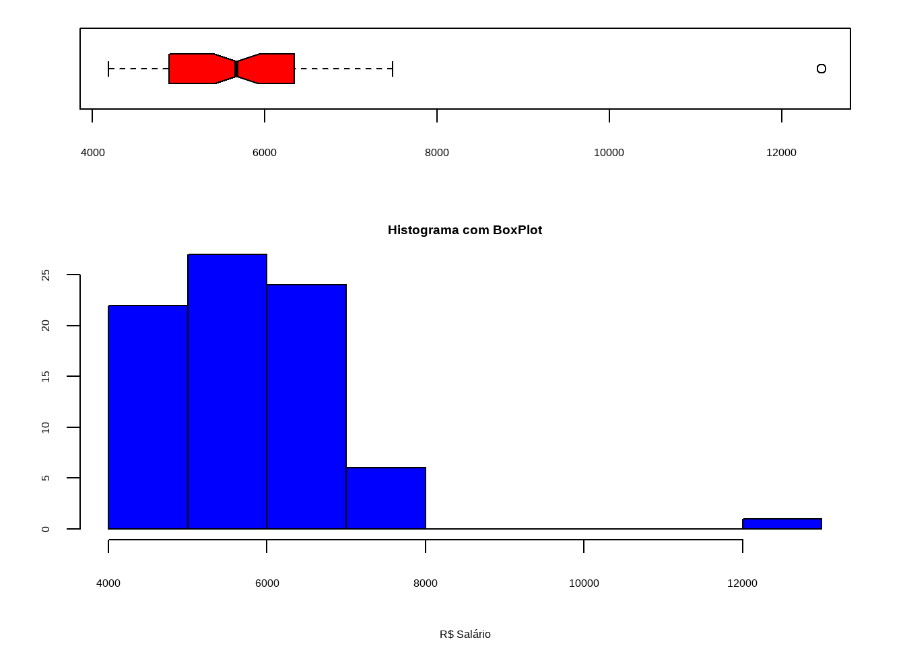
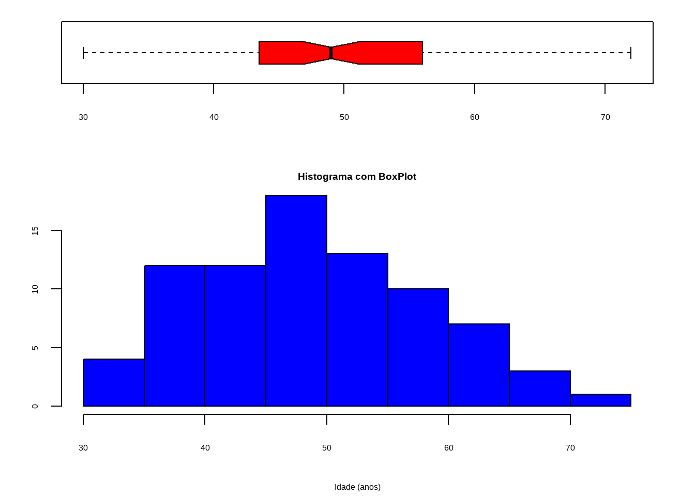
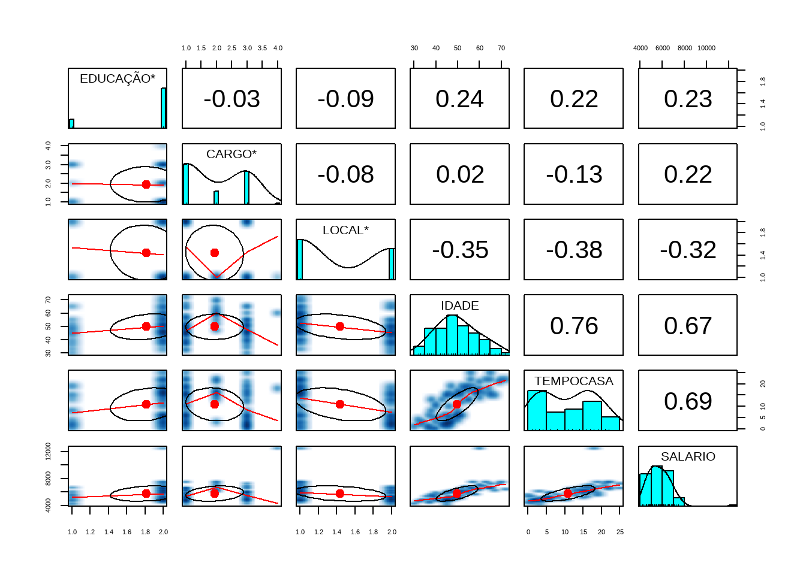

# Pacotes Base no R
getOption("defaultPackages")[1] "datasets" "utils" "grDevices" "graphics" "stats" "methods" Mini Roteiro: AED
Um Mini Roteiro para Realizar uma Análise Exploratória de Dados usando a Linguagem de Programação \(R_{4.3}\) com auxílio da IDE RStudio.
Em estatística, a análise exploratória de dados (AED) é uma abordagem à análise de conjuntos de dados de modo a resumir suas características principais, frequentemente com métodos visuais. Um modelo estatístico pode ou não ser usado, mas primariamente a AED tem como objetivo observar o que os dados podem nos dizer além da modelagem formal ou do processo de teste de hipóteses.
A análise exploratória de dados foi promovida pelo estatístico norte-americano John Tukey, que incentivava os estatísticos a explorar os dados e possivelmente formular hipóteses que poderiam levar a novas coletas de dados e experimentos.
Existem três principais maneiras de instalar pacotes. Em ordem de frequência, são:
Instale pacotes que não estão na sua biblioteca usando a função install.packages(“nome_do_pacote”).
Por exemplo:
Pessoas desenvolvedoras costumam disponibilizar a última versão de seus pacotes no Github, e alguns deles sequer estão no CRAN. Mesmo assim ainda é possível utilizá-los instalando diretamente pelo github. O comando é igualmente simples:
Se você precisar instalar um pacote que está zipado no seu computador (ou em algum servidor), utilize o seguinte comando:
É semelhante a instalar pacotes via CRAN, com a diferença que agora o nome do pacote é o caminho inteiro até o arquivo. O parâmetro repos = NULL informa que estamos instalando a partir da máquina local.
Até aqui utilizamos o que chamamos de Base R, ou seja, sintaxe e funções básicas do R usando apenas os pacotes padrões e pré-carregados. Ao digitar ?sum()no console, por exemplo, podemos ver que se trata de uma função do pacote base.
Para ver os pacotes carregados por padrão no R, use o comando seguinte:
# Pacotes Base no R
getOption("defaultPackages")[1] "datasets" "utils" "grDevices" "graphics" "stats" "methods" Primeiro Passo é definir o diretório de trabalho no R
# setwd: set working directory
# Definir o Diretório de Trabalho (caminho)
setwd('C:/Users/usuario/Documents/SEMEST_UFPA_2024')
# Mostrar o Caminho Fixado
getwd()[1] "C:/Users/usuario/Documents/SEMEST_UFPA_2024"Um dos primeiros passos de um projeto é importar dados externos para o software R. Os dados são frequentemente armazenados em formatos tabulados como arquivos .csv ou planilhas do tipo .xls.
| Pacote readr | Pacote readxl |
|---|---|
O pacote readr faz parte de um ecosisytema de pacotes tidyverse,e é utilizado para importar arquivos de texto, como .txt ou .csv, para o R. Para carregá-lo, rode o código:
library(readr)O pacote readr transforma arquivos de textos em tibbles usando as funções:
Segue como exemplor a leitura de base de dados via url
library(readr)
# Dados Separados por Ponto e Vírgula (;)
Vendas_A = read.csv2("http://raw.githubusercontent.com/Lucianea/Alta/master/vendas.csv")
# Dados separados por Vírgula (,)
Vendas_B = read.csv("http://raw.githubusercontent.com/Lucianea/Alta/master/vendas1.csv")Segundo Passo é carregar a base de dados, chamada de mercado. Para isso é necessário instalar o pacote para leitura de arquivo com extensão do tipo .xlsx por meio do comando install.packages(“readxl”).
Posteriormente, ativar o pacote no R com o comando library(readxl). Tendo um detalhe fundamental, que se instala somente um vez o pacote, e se ativa toda vez que for usar.
library(readxl)
setwd('C:/Users/usuario/Documents/SEMEST_UFPA_2024')
mercado <- read_excel('mercado.xlsx')
mercado2 <- read_excel('mercado2.xlsx')O dplyr é o pacote mais útil para realizar transformação de dados, aliando simplicidade e eficiência de uma forma elegante. Os scripts em R que fazem uso inteligente dos verbos dplyr e as facilidades do operador pipe tendem a ficar mais legíveis e organizados, sem perder velocidade de execução.
| Pacote dplyr |
|---|
As principais funções do dplyr são:
As principais vantagens de se usar o dplyr em detrimento das funções do R base são:
Para selecionar colunas, utilizamos a função select(). O primeiro argumento da função é a base de dados e os demais argumentos são os nomes das colunas que você gostaria de selecionar. Repare que você não precisa colocar o nome da coluna entre aspas.
library(dplyr)
Vendas_A %>%
dplyr:: select(filial, quinzena, valor_compra) filial quinzena valor_compra
1 A 1 100.22
2 A 1 80.89
3 A 1 75.44
4 A 2 305.33
5 A 2 120.99
6 A 2 27.89
7 B 2 30.50
8 B 2 500.80
9 B 2 247.67
10 B 1 70.00
11 B 1 97.50
12 B 2 856.00
13 B 1 93.20
14 B 2 271.26
15 B 1 500.00
16 B 1 61.69
17 B 1 99.00
18 B 2 220.00
19 C 1 12.25
20 C 2 188.00
21 C 2 117.60
22 C 2 354.00
23 C 1 732.00Vendas_B %>%
dplyr:: select(quinzena, filial, n_itens) quinzena filial n_itens
1 1 A 5
2 1 A 20
3 1 A 7
4 2 A 3
5 2 A 1
6 2 A 1
7 2 B 20
8 2 B 30
9 2 B 17
10 1 B 14
11 1 B 13
12 2 B 20
13 1 B 40
14 2 B 22
15 1 B 2
16 1 B 31
17 1 B 1
18 2 B 100
19 1 C 1
20 2 C 45
21 2 C 8
22 2 C 100
23 1 C 60Para filtrar valores de uma coluna da base, utilizamos a função filter().
library(dplyr)
Vendas_A %>%
dplyr:: filter(filial == "A") cupom filial valor_compra n_itens desconto_perc quinzena
1 101 A 100.22 5 2 1
2 102 A 80.89 20 0 1
3 103 A 75.44 7 0 1
4 104 A 305.33 3 10 2
5 105 A 120.99 1 2 2
6 106 A 27.89 1 0 2Vendas_A %>%
dplyr:: filter(filial == "B" & quinzena == 2) cupom filial valor_compra n_itens desconto_perc quinzena
1 201 B 30.50 20 0 2
2 202 B 500.80 30 12 2
3 203 B 247.67 17 10 2
4 206 B 856.00 20 15 2
5 208 B 271.26 22 10 2
6 212 B 220.00 100 2 2Para ordenar linhas, utilizamos a função arrange(). O primeiro argumento é a base de dados. Os demais argumentos são as colunas pelas quais queremos ordenar as linhas. No exemplo a seguir, ordenamos as linhas da base por ordem crescente de orçamento.
library(dplyr)
# Crescente
Vendas_A %>%
dplyr:: arrange(n_itens) cupom filial valor_compra n_itens desconto_perc quinzena
1 105 A 120.99 1 2 2
2 106 A 27.89 1 0 2
3 211 B 99.00 1 0 1
4 301 C 12.25 1 0 1
5 209 B 500.00 2 12 1
6 104 A 305.33 3 10 2
7 101 A 100.22 5 2 1
8 103 A 75.44 7 0 1
9 303 C 117.60 8 2 2
10 205 B 97.50 13 0 1
11 204 B 70.00 14 0 1
12 203 B 247.67 17 10 2
13 102 A 80.89 20 0 1
14 201 B 30.50 20 0 2
15 206 B 856.00 20 15 2
16 208 B 271.26 22 10 2
17 202 B 500.80 30 12 2
18 210 B 61.69 31 0 1
19 207 B 93.20 40 0 1
20 302 C 188.00 45 2 2
21 305 C 732.00 60 12 1
22 212 B 220.00 100 2 2
23 304 C 354.00 100 10 2## Decrescente
Vendas_A %>%
dplyr:: arrange(desc(n_itens)) cupom filial valor_compra n_itens desconto_perc quinzena
1 212 B 220.00 100 2 2
2 304 C 354.00 100 10 2
3 305 C 732.00 60 12 1
4 302 C 188.00 45 2 2
5 207 B 93.20 40 0 1
6 210 B 61.69 31 0 1
7 202 B 500.80 30 12 2
8 208 B 271.26 22 10 2
9 102 A 80.89 20 0 1
10 201 B 30.50 20 0 2
11 206 B 856.00 20 15 2
12 203 B 247.67 17 10 2
13 204 B 70.00 14 0 1
14 205 B 97.50 13 0 1
15 303 C 117.60 8 2 2
16 103 A 75.44 7 0 1
17 101 A 100.22 5 2 1
18 104 A 305.33 3 10 2
19 209 B 500.00 2 12 1
20 105 A 120.99 1 2 2
21 106 A 27.89 1 0 2
22 211 B 99.00 1 0 1
23 301 C 12.25 1 0 1## Decrescente de n_itens E ordema alfabetica de filial
Vendas_A %>%
dplyr:: arrange(-n_itens) %>%
dplyr:: arrange(filial) cupom filial valor_compra n_itens desconto_perc quinzena
1 102 A 80.89 20 0 1
2 103 A 75.44 7 0 1
3 101 A 100.22 5 2 1
4 104 A 305.33 3 10 2
5 105 A 120.99 1 2 2
6 106 A 27.89 1 0 2
7 212 B 220.00 100 2 2
8 207 B 93.20 40 0 1
9 210 B 61.69 31 0 1
10 202 B 500.80 30 12 2
11 208 B 271.26 22 10 2
12 201 B 30.50 20 0 2
13 206 B 856.00 20 15 2
14 203 B 247.67 17 10 2
15 204 B 70.00 14 0 1
16 205 B 97.50 13 0 1
17 209 B 500.00 2 12 1
18 211 B 99.00 1 0 1
19 304 C 354.00 100 10 2
20 305 C 732.00 60 12 1
21 302 C 188.00 45 2 2
22 303 C 117.60 8 2 2
23 301 C 12.25 1 0 1Para modificar uma coluna existente ou criar uma nova coluna, utilizamos a função mutate()
library(dplyr)
## Calcular o valor médio (VM)
Vendas_A %>%
dplyr:: mutate(VM = valor_compra/n_itens) %>%
dplyr:: select(VM, valor_compra, n_itens) %>%
dplyr:: arrange(VM) VM valor_compra n_itens
1 1.525000 30.50 20
2 1.990000 61.69 31
3 2.200000 220.00 100
4 2.330000 93.20 40
5 3.540000 354.00 100
6 4.044500 80.89 20
7 4.177778 188.00 45
8 5.000000 70.00 14
9 7.500000 97.50 13
10 10.777143 75.44 7
11 12.200000 732.00 60
12 12.250000 12.25 1
13 12.330000 271.26 22
14 14.568824 247.67 17
15 14.700000 117.60 8
16 16.693333 500.80 30
17 20.044000 100.22 5
18 27.890000 27.89 1
19 42.800000 856.00 20
20 99.000000 99.00 1
21 101.776667 305.33 3
22 120.990000 120.99 1
23 250.000000 500.00 2O mutate acrescenta novas colunas aos dados originais, ja o transmute cria novas colunas apartir dos dados
Sumarização é a técnica de se resumir um conjunto de dados utilizando alguma métrica de interesse. A média, a mediana, a variância, a frequência, a proporção, por exemplo, são tipos de sumarização que trazem diferentes informações sobre uma variável.
Para sumarizar uma coluna da base, utilizamos a função summarize(). O código abaixo resume a coluna orçamento pela sua média.
library(dplyr)
#numero de observacoes da base de dados
Vendas_A %>%
dplyr:: summarise(contagem=n()) contagem
1 23# numero de filiais distintas
Vendas_A %>%
dplyr:: select(filial) %>%
dplyr:: summarise(filial_distintas = n_distinct(filial)) filial_distintas
1 3# numero de cupons distinto da filial B
Vendas_A %>%
dplyr:: select(filial, cupom) %>%
dplyr:: filter(filial == "B") %>%
dplyr:: summarise(cupons_distintos = n_distinct(cupom)) cupons_distintos
1 12Muitas vezes queremos sumarizar uma coluna agrupada pelas categorias de uma segunda coluna. Para isso, além do summarize, utilizamos também a função group_by().
library(dplyr)
#numero de cupons distintos p/ filial
Vendas_A %>%
group_by(filial) %>%
summarise(cupons_distintos = n_distinct(cupom))# A tibble: 3 × 2
filial cupons_distintos
<chr> <int>
1 A 6
2 B 12
3 C 5# total de compras p/ filial
Vendas_A %>%
group_by(filial) %>%
summarise(compra_total = sum(valor_compra))# A tibble: 3 × 2
filial compra_total
<chr> <dbl>
1 A 711.
2 B 3048.
3 C 1404.# total de itens p/ filial
Vendas_A %>%
group_by(filial) %>%
summarize(item_total = sum(n_itens))# A tibble: 3 × 2
filial item_total
<chr> <int>
1 A 37
2 B 310
3 C 214# sumarizar informações em + de um grupo em + colunas
Vendas_A %>%
group_by(filial) %>%
summarize(
cupons_distintos = n_distinct(cupom),
item_total = sum(n_itens),
compra_total = sum(valor_compra))# A tibble: 3 × 4
filial cupons_distintos item_total compra_total
<chr> <int> <int> <dbl>
1 A 6 37 711.
2 B 12 310 3048.
3 C 5 214 1404.# Media, Desvio-padrao, Minimo e Maximo
Vendas_A %>%
group_by(filial) %>%
summarize(Media = mean(valor_compra) %>%
round(2),
Desvio = sd(valor_compra) %>%
round(2),
Minimo = min(valor_compra) %>%
round(2),
Maximo = max(valor_compra) %>%
round(2))# A tibble: 3 × 5
filial Media Desvio Minimo Maximo
<chr> <dbl> <dbl> <dbl> <dbl>
1 A 118. 96.7 27.9 305.
2 B 254. 249. 30.5 856
3 C 281. 281. 12.2 732 Utilizar o banco Vendas_A
Vendas_A %>%
dplyr:: arrange(n_itens, valor_compra) %>%
dplyr:: filter(valor_compra > 150) %>%
dplyr:: select(filial, n_itens,valor_compra) %>%
dplyr:: mutate(VM = valor_compra/n_itens) %>%
dplyr:: mutate(VM = round(valor_compra/n_itens, 1)) %>%
dplyr:: select(filial, n_itens, valor_compra, VM) filial n_itens valor_compra VM
1 B 2 500.00 250.0
2 A 3 305.33 101.8
3 B 17 247.67 14.6
4 B 20 856.00 42.8
5 B 22 271.26 12.3
6 B 30 500.80 16.7
7 C 45 188.00 4.2
8 C 60 732.00 12.2
9 B 100 220.00 2.2
10 C 100 354.00 3.5Vendas_A %>%
dplyr:: group_by(filial) %>%
dplyr:: summarize(Media = mean(valor_compra) %>%
round(2),
Mediana = median(valor_compra) %>%
round(2),
Desvio = sd(valor_compra) %>%
round(2),
Minimo = min(valor_compra) %>%
round(2),
Maximo = max(valor_compra) %>%
round(2))# A tibble: 3 × 6
filial Media Mediana Desvio Minimo Maximo
<chr> <dbl> <dbl> <dbl> <dbl> <dbl>
1 A 118. 90.6 96.7 27.9 305.
2 B 254. 160. 249. 30.5 856
3 C 281. 188 281. 12.2 732 A importância da apresentação dos dados é fundamental no início da faxina dos dados.
Para a apresentação dos dataset contamos com alguns pacotes na linguagem R que possibilitam a apresentação de tabelas de maneira bastante satisfatória (de forma elegante e até interativa).
| Pacote DT: datatable |
|---|
O pacote DT é uma excelente opção quando se trata de uma apresentação rápida, geral e dinâmica sobre a base de dados.
O pacote DT fornece uma interface R para a biblioteca JavaScript DataTables. Objetos de dados R (matrizes ou quadros de dados) podem ser exibidos como tabelas em páginas HTML, e DataTables fornece filtragem, paginação, classificação e muitos outros recursos nas tabelas.
Segue a base de dados (n=80) referentes as características dos Funcionários que trabalham no Supermercado Formosa, na cidade de Belém, Estado do Pará, em 2023.
library(DT)
datatable(mercado,
class = 'cell-border stripe',
editable = 'cell',
caption = 'Tabela 01: Banco de Dados sobre Funcionários do Supermercado Formosa, Belém - Pará, 2023.')Utilizamos a função diagnose(), do paocte dlookr na linguagem R, para identificar os tipos de variáveis para análise.
| Pacote dlookr |
|---|
 |
A função diagnose() da biblioteca dlookr que retorna por variável qual o tipo dela, contagem de valores faltantes, frequência de faltantes em relação à base toda.
library(dlookr)
mercado %>% dlookr::diagnose()# A tibble: 6 × 6
variables types missing_count missing_percent unique_count unique_rate
<chr> <chr> <int> <dbl> <int> <dbl>
1 EDUCAÇÃO character 0 0 2 0.025
2 CARGO character 0 0 4 0.05
3 LOCAL character 0 0 2 0.025
4 IDADE numeric 0 0 36 0.45
5 TEMPOCASA numeric 0 0 21 0.262
6 SALARIO numeric 0 0 60 0.75 table(mercado2$CARGO)
AUXILIAR DIRETOR GERENTE
37 12 30 table(mercado2$EDUCAÇÃO)
SECUNDÁRIO SUPERIOR
15 64 table(mercado2$LOCAL)
CAPITAL INTERIOR
44 35 prop.table(table(mercado2$CARGO))*100
AUXILIAR DIRETOR GERENTE
46.83544 15.18987 37.97468 prop.table(table(mercado2$EDUCAÇÃO))*100
SECUNDÁRIO SUPERIOR
18.98734 81.01266 prop.table(table(mercado2$LOCAL))*100
CAPITAL INTERIOR
55.6962 44.3038 O pacote gtsummary fornece uma maneira elegante e flexível de criar tabelas analíticas e de resumo prontas para publicação usando a linguagem de programação R.
| Pacote gtsummary |
|---|
 |
A função tbl_summary() calcula estatísticas descritivas para variáveis contínuas, categóricas e dicotômicas em R e apresenta os resultados em uma tabela de resumo bonita e personalizável, pronta para publicação.
library(dplyr)
library(gtsummary)
mercado %>%
select(
LOCAL,
CARGO,
IDADE,
TEMPOCASA,
EDUCAÇÃO,
SALARIO) %>%
tbl_summary(by = LOCAL,
statistic = list(all_continuous() ~ "{mean} ({sd})")) %>%
modify_header(label = "**VARIAVEIS**") %>%
modify_caption("Tabela 01. Característica Salariais Formosa") %>%
add_n() %>%
add_difference() %>%
bold_p(t = 0.05) %>%
bold_labels() %>%
italicize_levels()| VARIAVEIS | N | CAPITAL N = 451 |
INTERIOR N = 351 |
Difference2 | 95% CI2,3 | p-value2 |
|---|---|---|---|---|---|---|
| CARGO | 80 | 0.91 | 0.44, 1.4 | |||
| AUXILIAR | 17 (38%) | 20 (57%) | ||||
| DIRETOR | 12 (27%) | 0 (0%) | ||||
| GERENTE | 15 (33%) | 15 (43%) | ||||
| PRESIDENTE | 1 (2.2%) | 0 (0%) | ||||
| IDADE | 80 | 53 (9) | 46 (9) | 6.7 | 2.7, 11 | 0.001 |
| TEMPOCASA | 80 | 13 (7) | 8 (6) | 5.7 | 2.7, 8.7 | <0.001 |
| EDUCAÇÃO | 80 | 0.19 | -0.26, 0.63 | |||
| SECUNDÁRIO | 7 (16%) | 8 (23%) | ||||
| SUPERIOR | 38 (84%) | 27 (77%) | ||||
| SALARIO | 80 | 6,096 (1,300) | 5,369 (718) | 727 | 271, 1,183 | 0.002 |
| 1 n (%); Mean (SD) | ||||||
| 2 Standardized Mean Difference; Welch Two Sample t-test | ||||||
| 3 CI = Confidence Interval | ||||||
A função mais famosa para a estatística descritiva no R, é a chamada de summary(), que dá a amplitude dos dados.
A função summary() do pacote basic, retorna boa parte da estatística descritiva como os quartis, média, mediana, mínimo, máximo e as espécies que há na tabela. É importante saber que de ante-mão, quanto mais próxima a mediana estiver da média, maior a probablidade de a destribuição dos dados ser gaussiana. Esta forma de descrição é mais utilizada para uma obtenção rápida dos parâmetros dos dados.
summary(mercado2$IDADE) Min. 1st Qu. Median Mean 3rd Qu. Max.
30.00 43.50 49.00 49.62 55.50 72.00 summary(mercado2$TEMPOCASA) Min. 1st Qu. Median Mean 3rd Qu. Max.
0.0 3.5 12.0 10.8 16.5 25.0 summary(mercado2$SALARIO) Min. 1st Qu. Median Mean 3rd Qu. Max.
4187 4894 5660 5693 6270 7481 o 1º quartil(1 st Qu.) indica que 25% dos funcionários têm renda salarial menor ou igual a R$ 4.894 e o 3º quartil(3 rd Qu.) indica que 75% têm renda menor ou igual a R$ 6.306.
Estes dois valores indicam que 50% dos funcionários tem renda nesse intervalo, o que já nos dá uma idéia de variabilidade da Renda.
Quanto maior a diferença entre o 3º e o 1º quartil, maior a dispersão da variável.
O pacote skimr é um função que nos fornece medidas resumo de variáveis de uma base de dados de interesse. Ele pode ser visto como uma alternativa mais completa para a função summary() do R Base para gerar uma tabela geral sobre a base de dados, fornecendo um primeiro olhar sobre o fenômeno estudado.
| Pacote skimr |
|---|
 |
library(skimr)
mercado |> skim()| Name | mercado |
| Number of rows | 80 |
| Number of columns | 6 |
| _______________________ | |
| Column type frequency: | |
| character | 3 |
| numeric | 3 |
| ________________________ | |
| Group variables | None |
Variable type: character
| skim_variable | n_missing | complete_rate | min | max | empty | n_unique | whitespace |
|---|---|---|---|---|---|---|---|
| EDUCAÇÃO | 0 | 1 | 8 | 10 | 0 | 2 | 0 |
| CARGO | 0 | 1 | 7 | 10 | 0 | 4 | 0 |
| LOCAL | 0 | 1 | 7 | 8 | 0 | 2 | 0 |
Variable type: numeric
| skim_variable | n_missing | complete_rate | mean | sd | p0 | p25 | p50 | p75 | p100 | hist |
|---|---|---|---|---|---|---|---|---|---|---|
| IDADE | 0 | 1 | 49.75 | 9.59 | 30.0 | 43.75 | 49.00 | 56.0 | 72.0 | ▃▇▇▃▃ |
| TEMPOCASA | 0 | 1 | 10.89 | 7.40 | 0.0 | 3.75 | 12.50 | 17.0 | 25.0 | ▇▃▅▆▃ |
| SALARIO | 0 | 1 | 5777.62 | 1138.19 | 4186.6 | 4894.30 | 5673.45 | 6306.3 | 12465.8 | ▇▇▁▁▁ |
Veja que a saída da função skim mostra uma visão geral da base de dados, nos dando informações como número de linhas, número de colunas, e os tipos das colunas
Ela fornece também informações individuais sobre cada coluna da base, separando as colunas por tipo: cada tipo nos dá um conjunto diferente de estatísticas, que façam sentido para aquele tipo de dado.
Conhecer como as variáveis se relacionam também é um passo muito importante antes da elaboração de um modelo quantitativo.
library(magrittr)
library(dplyr)
nf = layout(mat = matrix(c(1,2),2,1, byrow = TRUE), height = c(1,2))
par(mar = c(4.1, 3.1, 1.1, 2.1))
boxplot(mercado$SALARIO,
col = "Red",
border = "Black",
horizontal = TRUE,
notch = TRUE)
hist(mercado$SALARIO,
col = "blue",
freq = TRUE,
main = "Histograma com BoxPlot",
xlab = "R$ Salário",
ylab = "Frequência")
library(magrittr)
library(dplyr)
nf = layout(mat = matrix(c(1,2),2,1, byrow = TRUE),height = c(1,2))
par(mar = c(4.1, 3.1, 1.1, 2.1))
boxplot(mercado$IDADE,
col = "Red",
border = "Black",
horizontal = TRUE,
notch = TRUE)
hist(mercado$IDADE,
col = "blue",
freq = TRUE,
main = "Histograma com BoxPlot",
xlab = "Idade (anos)",
ylab = "Frequência")
Vamos investigar como está o comportamento das variáveis através de uma ferramenta chama diagrama de ramos e folhas. Para isso vamos usar o comando abaixo:
stem(mercado2$IDADE)
The decimal point is 1 digit(s) to the right of the |
3 | 0234
3 | 67778899
4 | 0000233344
4 | 5555556666677778899
5 | 00000111222234
5 | 5555667889
6 | 000234
6 | 555579
7 | 02stem(mercado2$SALARIO)
The decimal point is 3 digit(s) to the right of the |
4 | 234
4 | 5666777778889999999
5 | 1111111333334
5 | 5566777899999
6 | 01111122223344
6 | 66666667899
7 | 133
7 | 555A função pairs.panels() do pacote psych no R gera um figura com os gráficos de dispersão 2 a 2, os histogramas de cada variável e as correlações das variaveis 2 a 2.
library(psych)
pairs.panels(mercado,
method = "pearson",
density = TRUE,
ellipses = TRUE,
smoother = TRUE)